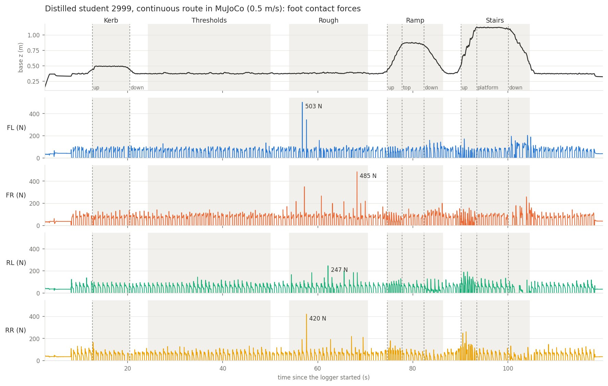
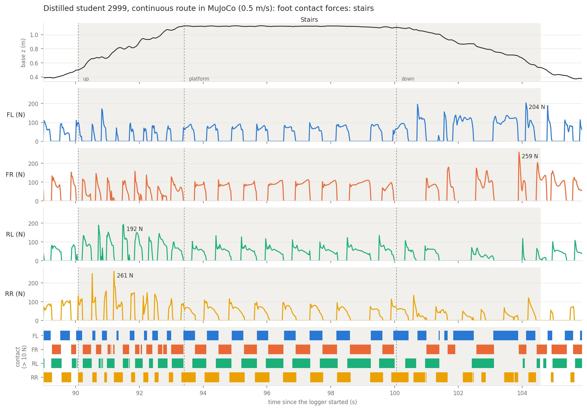

Task
| Terrain on the route | Specification |
|---|---|
| Stairs, up and down | rise ≤ 15 cm, tread ≥ 25 cm |
| Kerbs | ≤ 12 cm |
| Ramps | ≤ 20° |
| Rough ground | ± 5 cm |
| Thresholds and cable covers | ≤ 5 cm |
Ground rules
- the policy sees only what a sensor model produced; ground truth only in the critic
- sim-to-sim: the exported policy runs in a C++ controller talking Unitree SDK2 LowCmd / LowState to unitree_mujoco
- commands over ROS 2 Humble /cmd_vel, ≥ 10 Hz, 0.5 s without a message means stop
- perception emulated with the same sensor model; late, partially invalid and missing maps tested
- the same metrics in both simulators, differences explained
System
1 · Train
Isaac Lab
4096 robots, a 10-row curriculum per terrain type, the L1 map model in the loop, a privileged critic.
2 · Export
ONNX + deploy config
Recurrent policy with its GRU state as an input; ONNX matches PyTorch within 3e-6.
3 · Run (Docker)
C++ controller ↔ unitree_mujoco
- SDK2 over DDS, 50 Hz policy
- ROS 2 /cmd_vel bridge with clamping and a watchdog
- L1 map emulator: the training code on the scene, UDP to the controller
Observation matching: the same robot state and terrain give the same policy input in both simulators (proprioception within 6e-8, map differences only at terrain edges).
Perception
The map the policy sees
- 5 channels × 20 × 32 cells of 5 cm: 1.6 m × 1.0 m around the robot, aligned with its heading
- mean height, top, unknown, upper bound of hidden cells, age
- plus 45 proprioceptive values: IMU, joints, last action, command
- on the real robot: L1 point cloud → LIO → elevation map → adapter → the same layout
L1 sensor model, randomised per episode
- rays cast in the scene: occlusion and only what the sensor can see
- 21,600 points/s × 0.5–1, frames at 10–16 Hz
- latency 40–120 ms, 1–3 % dropped frames, outages of 0.3–1 s
- odometry drift as the robot walks
Policies and training
Blind
proprioception with 5 steps of history; the baseline and the fallback without perception
Teacher
noise-free terrain samples around each foot; training only
Distilled student
CNN on the L1 map + GRU, imitating the teacher on the noisy map: the main policy
Direct PPO student
the same network and input trained with PPO from scratch, as a control for distillation
Shared recipe: Isaac Lab’s Go2 rough-terrain rewards plus route terms (swing clearance, a force-graded cost for kicking thresholds, standing still on a zero command), penalties scaled in over training, and randomised friction, mass, pushes and joint friction. 39 documented changes, each with its reason and evidence: many answered a failure seen in training or evaluation, others were design choices or requirements of the task.
Results
Isaac Lab
| Policy | Pass rate | Threshold kicks / m | No map at all |
|---|---|---|---|
| Distilled student (main) | 0.968 | 0.56 | 0.85 |
| Direct PPO student | 0.964 | 0.75 | 0.82 |
| Direct PPO + step-over terms (fine-tune) | 0.958 | 0.58 | 0.82 |
| Direct PPO + step-over terms (scratch) | 0.951 | 0.50 | 0.86 |
| Blind | 0.922 | 0.67 | — |
Pass rate: share of robots crossing the tile at the spec level and beyond, averaged over forward 0.3 / 0.6 / 1.0, backward 0.6 and lateral 0.4 m/s. Kicks: contacts with a threshold’s face per metre at 0.6 m/s. No map: mean pass rate on 8 terrains with every map cell unknown.
MuJoCo, 5 runs per condition
| Test | Distilled student | Direct PPO | Blind |
|---|---|---|---|
| 13 main conditions all crossed · falls | 13 · 0 | 12 · 1 | 10 · 6 |
| Stairs at 1.0 m/s | 5/5 | 5/5 | 1/5, 4 falls |
| Continuous route, 34.5 m | 5/5 | 3/5 | 5/5 |
| Stop-and-go, stops on the stair flights | 2/5 | 5/5 | 4/5 |
| Speed under a 0.5 m/s command | 0.35 m/s | 0.39 m/s | 0.42 m/s |
| Map 0.3 s late · right half invalid | 15/15 · 15/15 | 15/15 · 15/15 | — |
| No map at all (stairs, kerb, thresholds) · falls | 10/15 · 1 | 10/15 · 0 | — |
Main conditions: six terrains forward, four backward, three at 1.0 m/s; ground friction 0.8; lane keeping from the pose. Runs broken by a stalled compute node are detected and repeated.
Close-ups
Foot contact forces
The simulator fills each foot’s normal contact force into the SDK2 state, the field the real robot’s foot sensors use. The sum over the four feet averages 150 N, the robot’s weight. Going up, the hind legs push; going down, the front legs brake with longer stance.


Isaac Lab vs MuJoCo
With the same terrain, commands and metrics, MuJoCo success at 0.5 m/s lies between the two Isaac difficulty rows that bracket the spec for every policy and terrain, apart from three single failures in 5 runs (blind on rough ground backward, direct PPO on the kerb, one blind fall on flat ground after 40 s of walking), which at 5 runs against 16 robots per tile are not a significant difference. Speed, however, is lower in MuJoCo for every policy.
Changing one factor at a time found the cause: unitree’s MuJoCo model gives the feet torsional (0.02 m) and rolling (0.01 m) friction, which the physics engine used in training does not have. Turning twists the feet and side steps roll them.
| Flat-ground tracking | go2.xml | without foot torsion / rolling | Isaac Lab |
|---|---|---|---|
| forward | 70–85 % | 92–93 % | 92–94 % |
| lateral | 37–60 % | 74–81 % | 77–85 % |
| turn in place | 32–64 % | 98–100 % | 97–99 % |
Ranges over the blind, direct PPO and distilled policies.
Limits and next steps
Restarting on a down flight
Stopped on descending stairs, the distilled student stayed standing under a 0.4 m/s command in 2 of 5 runs. A navigation stack should not command stops on stair flights.
No map at all
Without any map the distilled student keeps climbing blind (one fall in 5 runs); the direct PPO student keeps stepping against the first riser without climbing (no fall).
Proposal
A perception gate
Between navigation and the policies: if the map is stale or mostly unknown ahead, switch to the blind policy at ≤ 0.5 m/s and report a degraded mode. The blind policy crosses every route terrain at 0.5 m/s in MuJoCo. Not implemented yet.
Stepping over thresholds
All perception policies meet thresholds gently but still touch them. Penalty-only training cut forward contacts by 15–30 %, not to zero, in line with published work. A commanded swing height (after Walk These Ways) was tried next and not adopted: after three runs it still climbed far behind the policy without it (stairs-up curriculum level 0.63 vs 3.89 at the same iteration), with no sign of fewer threshold kicks. Stepping over stays open; the other routes in the literature are a swing trajectory generator or planned footholds.
Reproducibility and tools
Reproduce
The sim-to-sim stack builds as a Docker image; the README steps are re-run on a clean GitHub-hosted runner on every change to the controller or simulator. Each exported policy retrains from scratch with one command, on a Slurm cluster or on one GPU machine, and the checkpoint of every training stage is released. Every training run keeps its command, commit and full configuration.
Code
The code repository (Isaac Lab extension, C++ controller, perception emulator, scenes, evaluation scripts, exported policies) is private and available on request.
AI tools
Claude did the engineering under my decisions; Codex drafted the proposal text. Cases where a tool was wrong are logged with how they were caught.
Retrained from scratch
All three policies were trained again from scratch with the same commands and seed. GPU training is not bit-wise repeatable, so a retrain is a new sample of the same recipe:
- the direct PPO student came out at the same level (Isaac pass rate 0.956–0.968 over its shortlisted checkpoints vs 0.964; in MuJoCo 13/13 main conditions, no fall)
- the blind policy’s pass rate fell inside the original’s spread (0.888–0.900 over its shortlisted checkpoints vs 0.878–0.922), but it climbs stairs less reliably: 3 of 5 continuous-route runs fell at the first step
- the teacher came out weaker on stairs: its refit to the final rewards stalled for about 2000 iterations and was still recovering at the end, whereas the original refit at that step recovered within a few hundred iterations. The step is fragile: 3 of the 4 original teacher refits to these rewards collapsed. Restarting that step from the released checkpoint gave the original teacher again (pass rate 0.966 vs 0.964), and distilling again from the released teacher gave the original student (0.972 vs 0.968)